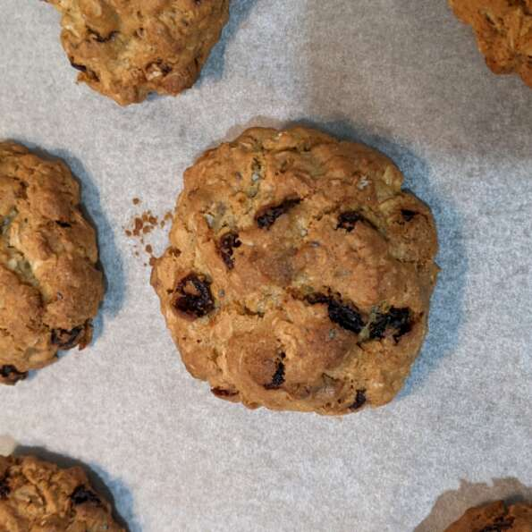

Oatmeal Raisin Cookies

An old stand-by that the whole family loves.
- Prep: 15 mins
- Cook: 10 mins
- Additional: 35 mins
- Total: 1 hr
- Yield: 4 dozen
Ingredients
- ¾ cup butter, softened
- ¾ cup white sugar
- ¾ cup packed light brown sugar
- 2 eggs
- 1 teaspoons vanilla extract
- 1 ¼ cups all-purpose flour
- 1 teaspoons baking soda
- ¾ teaspoon ground cinnamon
- ½ teaspoon salt
- 2 ¾ cups rolled oats
- 1 cups raisins
Directions
- Preheat oven to 375 degrees F (190 degrees C).
- In large bowl, cream together butter, white sugar, and brown sugar untli smooth. Beat in the eggs and vanllia until fluffy. Stir together flour, baking soda, cinnamon, and salt. Gradually beat into butter mixture. Stir in oats and raisins. Drop by teaspoonfuls onto ungreased cookie sheets.
- Bake 8 to 10 minutes in the preheated oven, or until golden brown. Cool slightly, remove from sheet to wire rack. Cool completely.
Return to recipe selection